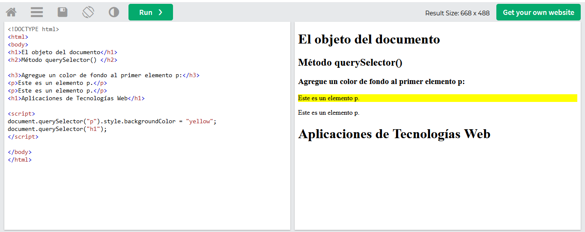

Elementos DOM
Formas de seleccionar elementos en el documento, en esta ocasión presentaremos dos métodos:
querySelector()
querySelectorAll()
Método querySelector()
Con este método podemos encontrar elementos con uno o más selectores de CSS.
Creamos un ejemplo en html, para ello uso hacemos de w3schools:

Con este método podemos encontrar elementos con uno o más selectores de CSS.
Creamos un ejemplo en html, para ello uso hacemos de w3schools:
Método querySelectorAll()
Este método nos ayuda a encontrar todos los elementos que coinciden con el selector de CSS y devuelve una lista de todos esos nodos.
Creamos un ejemplo en html, para ello hacemos de w3schools:
Este método nos ayuda a encontrar todos los elementos que coinciden con el selector de CSS y devuelve una lista de todos esos nodos.
Creamos un ejemplo en html, para ello hacemos de w3schools: